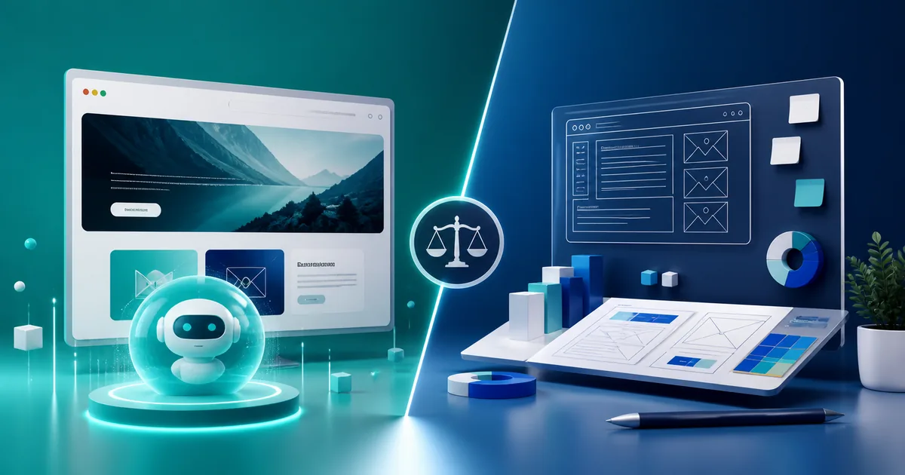

Constructor de site cu AI sau agenție web? Ce economisești și ce riști în 2026
Ghid despre constructor de site cu AI sau agenție web: criterii, riscuri, exemple și pași practici pentru o decizie corectă, fără promisiuni sau recomandăr…
Citește articolul